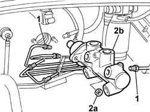

3330C10 MASTER CYLINDER (PUMP) - R + R
- Path
- Procedures > 33 BRAKING SYSTEM > 3330 HYDRAULIC BRAKING SYSTEM > 3330C BRAKE PUMP, RESERVOIR AND LOAD PROPORTIONING VALVE > 3330C10 MASTER CYLINDER (PUMP) - R + R
- Kind
- repair procedure (removal / refitting; the operation number is the code)
- Applies to
- all engines; all production periods
- Interactive page
- https://sloeber94.github.io/elrnDB-fDct/en/#/244001104
Applies to: all engines; all production periods
 Removing
Removing
 Refitting
RefittingOp. 3330C30 BRAKE FLUID RESERVOIR - R + R AND WASH INSIDE
1. Undo the connectors for the front and rear brake pipes at the master cylinder.
2. Undo the fixing nuts (2a) and remove the master cylinder pump (2b) from the housing on the brake servo.

Applies to: all engines; all production periods
Refitting
Removing- Position the master cylinder in the housing on the brake servo and tighten the fixing nuts.
 | Value - daNm | Fastening | Component | Ø |
|---|---|---|---|---|
. | 1.2 -2.2 daNm | Nut | BRAKING SYSTEM PIPE CONNECTORS | M10x1 |
- Tighten the connectors for the brake pipes on the master cylinder.